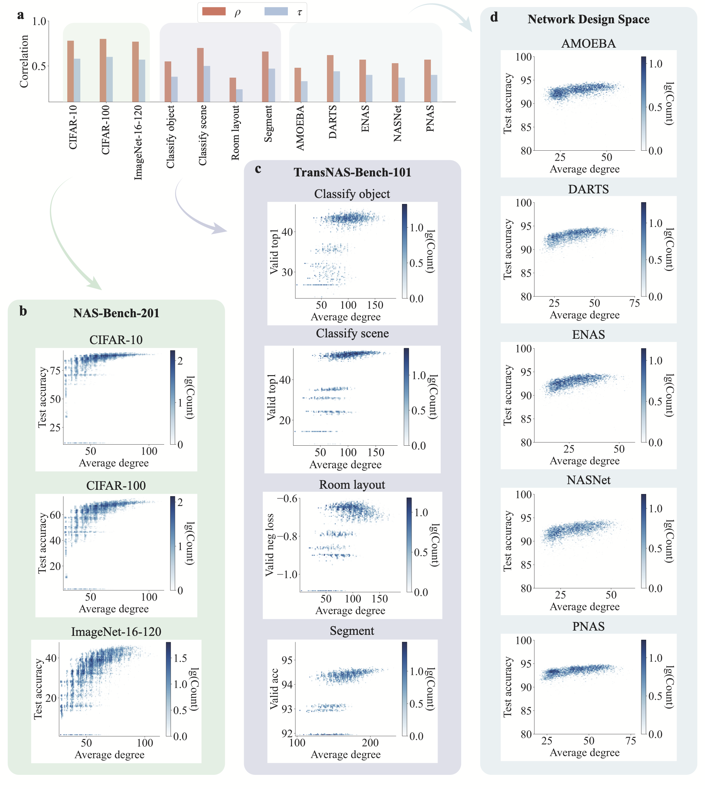
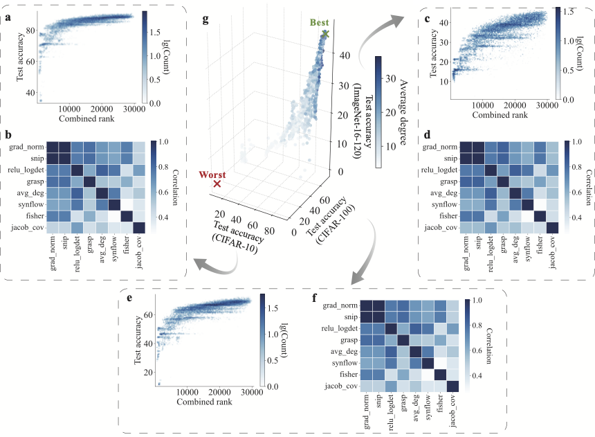
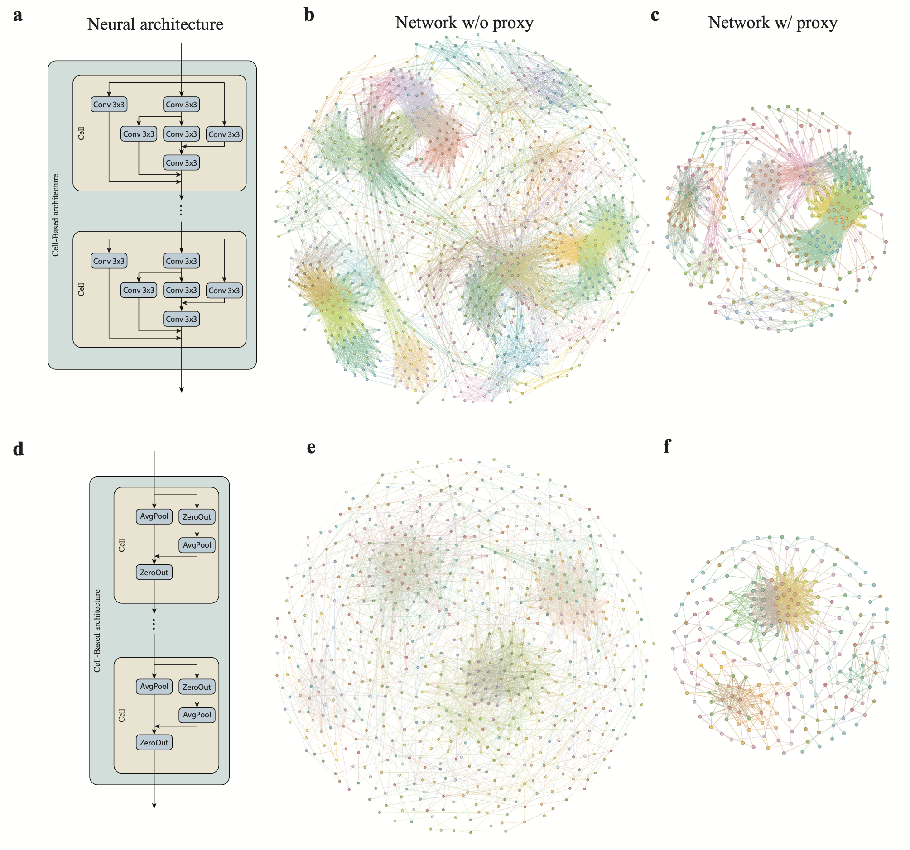
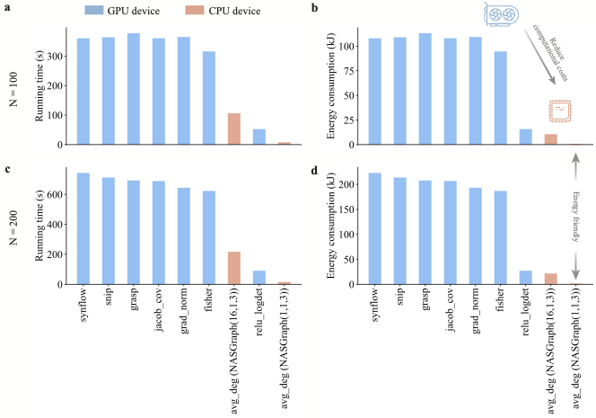
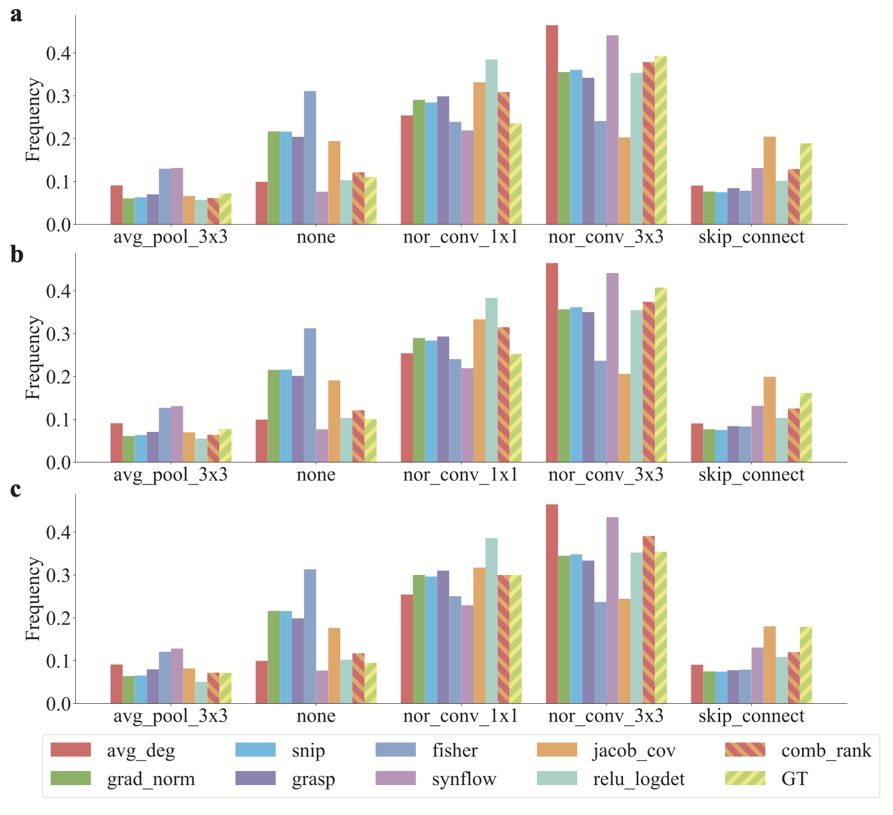
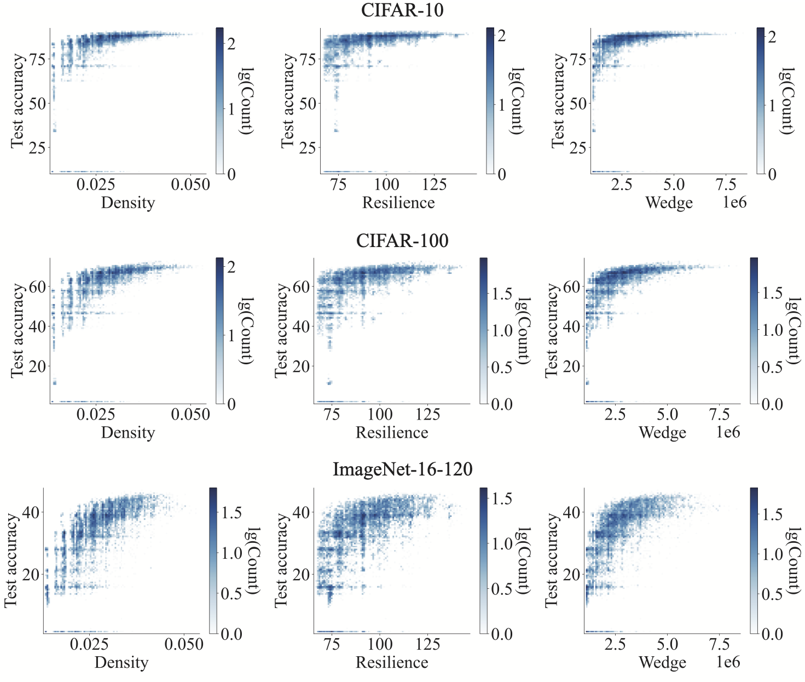

Deep learning profoundly impacts various areas, such as face recognition and language translation. Owing to the increasingly high computational costs of training neural architectures, it is intractable to manually examine the performance of various neural architectures, promoting the area of Neural architecture search (NAS) that enables artificial intelligence (AI) automation. Despite the advance of NAS in automatically discovering the optimal neural networks, the fundamental understanding of the structure of neural architectures is limited. To fill the gap, we propose a training-free and data-agnostic method dubbed NASGraph that converts neural architectures to graphs whose graph properties determine their performances, enabling us to search for or design strong architectures. On various standard NAS benchmarks, NASGraph outperforms baseline NAS methods and requires remarkably fewer computation resources. The numerical results illuminate the relationship between neural architecture and its performance, complementing other approaches. Therefore, combining our approach with these approaches leads to performance improvement, but not combining the others. Our study offers a new perspective on network science for AI, potentially advancing various aspects of machine learning and uncovering the black box of convolutional neural networks.
NASGraph relies merely on forward propagation over neural networks that have randomly initialized weights. The mapping process is considered as training-free as it does not require any training of neural networks nor training of neural networks, nor training of a predictor to relate prediction metrics to the performance of neural networks. Graph properties of converted neural networks, in the NASGraph mapping strategy, exhibit a correlation with neural network performance without entailing any training.
NASGraph bridges the neural network space to the graph space, which enables high efficiency in computing prediction logits by utilizing the significantly lower computational costs for computing graph properties compared to training neural networks.






@article{huang2026ufg
title = {Unveil Fundamental Graph Properties for Neural Architecture Search},
author = {Huang, Zhenhan and Pedapati, Tejaswini and Chen, Pin-Yu and Jiang, Chunheng and Gao, Jianxi},
journal = {Advanced Science},
year = {2026}
}